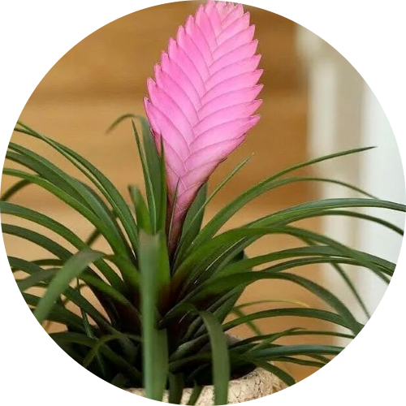

Pink Quill
Water: 2-3 times a week.
You should spray water around it, not around the base of the plant because that will cause the stem to rot, although the water should stil reach the roots. Pink Quills should be placed under partial shade. Overwatering could cause damage to the colors, and they will start to fade.